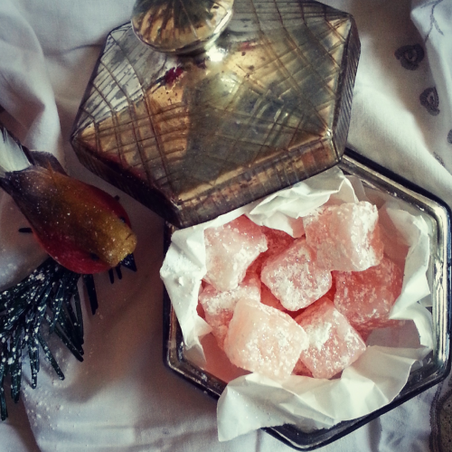

Turkish Delight

From The Chronicles of Narnia
Turkish delight is a extremely sweet candy from Chronicles of Narnia, where the White Witch enticed and entrapped Edmund in The Lion, the Witch, and the Wardrobe. Like all of her magical food, it was highly addictive, making those who ate it want more and more, thus making them easy for her to control
Ingredients
- 2 cups granulated sugar
- 1 cup cold water
- 1.5 (1/4 ounce) envelopes unflavored gelatin
<1i>1 orange
- 1 lemon, juice of red food coloring, to your liking
- 1⁄2 cup chopped nutmeats
- powdered sugar (confectioners)
Steps
- Soak gelatin in one-half cupful of the cold water for ten minutes
- lace sugar and remaining cold water in a saucepan and bring to the boiling point, add soaked gelatin and the juices of the orange and lemon
- Boil to 240°F on a candy thermometer, or soft ball stage(spoon a drop of this mixture into a glass of cold water and it should form a soft putty ball)
- Add nutmeats and red food coloring until desired color is achieved.
- Remove from heat and beat until creamy
- Turn into a bread pan that is lightly greased and placed in cold water to the depth of one inch
- Let stand until firm, turn out onto board, and cut into cubes. Roll in powdered sugar
Back to Top
Back to the Recipes